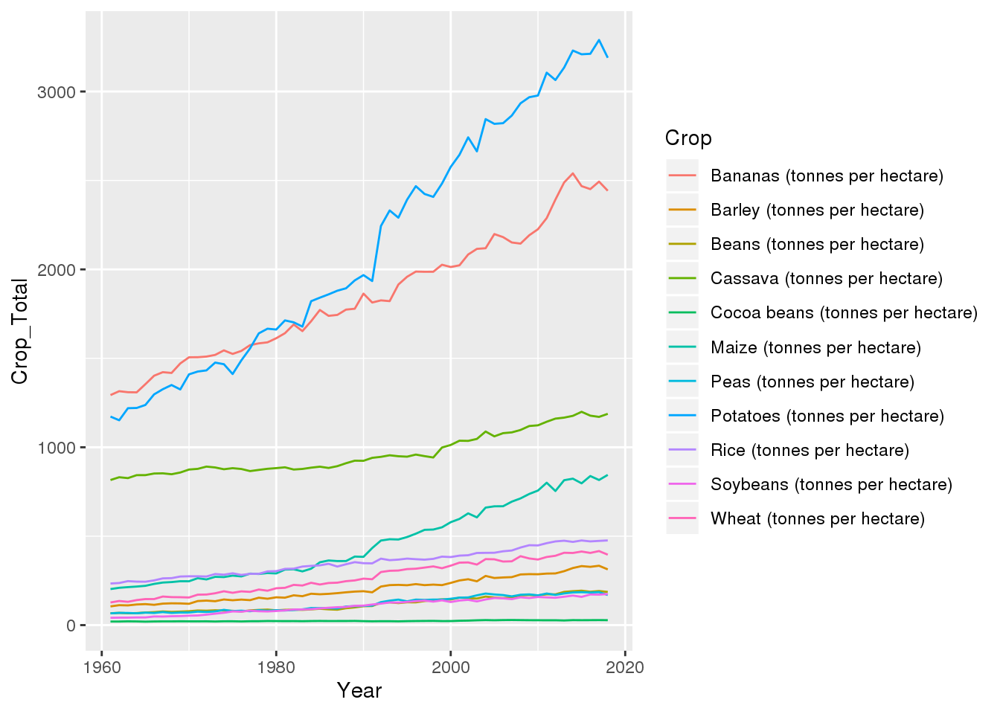
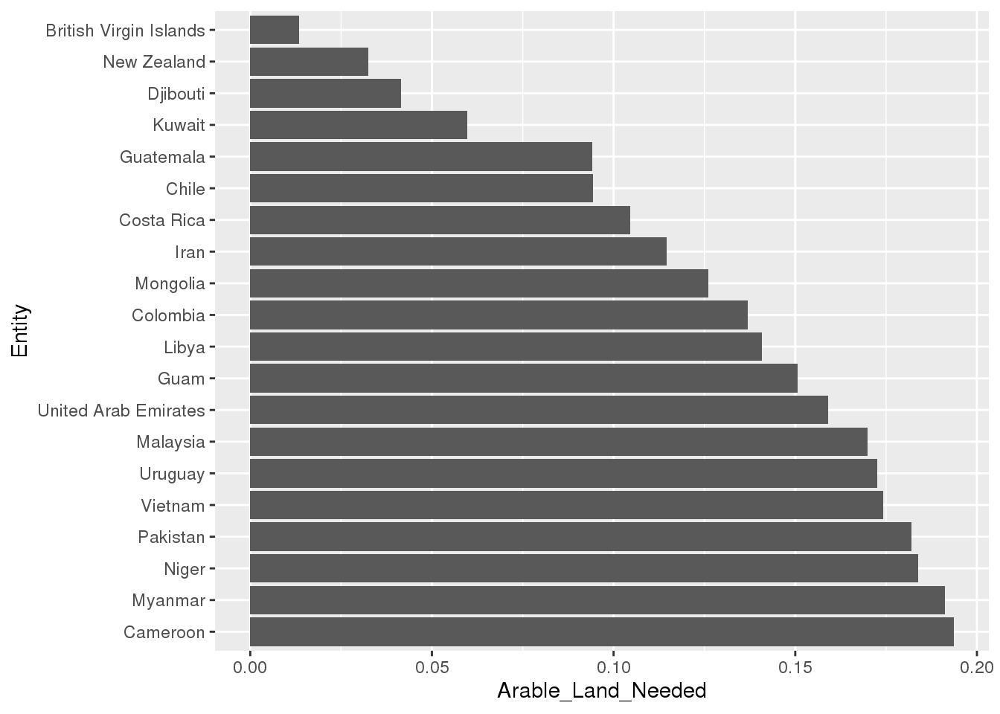

test
library(tidyverse)
library(here)
I will be analyzing global agricultural development using data taken from the TidyTuesday GitHub page. The primary data I will be using is contained key_crop_yields.csv, which has 13,075 observations and 14 variables: The variable Entity, a character that denotes the name of the region or country the observation comes from, the variable Code, which is the country code of the country the observation comes from (continents and regions use NA, and Year, a double ranging from 1961-2014 that represents the year the observation comes from. Additionally, there are 11 other variables representing 11 different crops and their yield in metric tonnes per hectare. The different crops represented are wheat, rice, maize, soybeans, potatoes, beans, peas, cassava, barley, cocoa beans, and bananas.
The other data of interest are found in arable_land_pin.csv, which contains the additional double variable Arable land needed to produce a fixed quantity of crops ((1.0 = 1961)), which can be used to track changes in land use efficiency over time. I will also be using the data in the files cereal_crop_yield_vs_fertilizer_application.csv and cereal_yields_vs_tractor_inputs_in_agriculture.csv, both of which track the use of fertilizer and tractors in agriculture over time, two important factors in farming efficiency. Fertilizer contains the additional variables Cereal yield and Nitrogen fertilizer use, while Tractor_inputs contains Tractors per 100 sq km arable land, Cereal yield (kilograms per hectare), and Total population, which is taken from the Gapminder dataset. Each of these 3 datasets also contain the key variables Entity, Code, and Year.
filepath <- here('data', 'tidytuesday', 'data', '2020', '2020-09-01')
files <- dir(filepath)
csv_vec <- str_detect(files, '(.csv$)') # read only .csv files
dat <- list()
for (i in 1:length(files)) {
if (csv_vec[i] & files[i] != "land_use_vs_yield_change_in_cereal_production.csv") {
dat[[i]] <- read_csv(paste(filepath, files[i], sep='/'))
}
}
## Parsed with column specification:
## cols(
## Entity = col_character(),
## Code = col_character(),
## Year = col_double(),
## `Arable land needed to produce a fixed quantity of crops ((1.0 = 1961))` = col_double()
## )
## Parsed with column specification:
## cols(
## Entity = col_character(),
## Code = col_character(),
## Year = col_double(),
## `Cereal yield (tonnes per hectare)` = col_double(),
## `Nitrogen fertilizer use (kilograms per hectare)` = col_double()
## )
## Parsed with column specification:
## cols(
## Entity = col_character(),
## Code = col_character(),
## Year = col_character(),
## `Tractors per 100 sq km arable land` = col_double(),
## `Cereal yield (kilograms per hectare) (kg per hectare)` = col_double(),
## `Total population (Gapminder)` = col_double()
## )
## Parsed with column specification:
## cols(
## Entity = col_character(),
## Code = col_character(),
## Year = col_double(),
## `Wheat (tonnes per hectare)` = col_double(),
## `Rice (tonnes per hectare)` = col_double(),
## `Maize (tonnes per hectare)` = col_double(),
## `Soybeans (tonnes per hectare)` = col_double(),
## `Potatoes (tonnes per hectare)` = col_double(),
## `Beans (tonnes per hectare)` = col_double(),
## `Peas (tonnes per hectare)` = col_double(),
## `Cassava (tonnes per hectare)` = col_double(),
## `Barley (tonnes per hectare)` = col_double(),
## `Cocoa beans (tonnes per hectare)` = col_double(),
## `Bananas (tonnes per hectare)` = col_double()
## )
dat[[4]]: key_crop_yields.csv
crop_yields_long <- dat[[4]] %>%
pivot_longer(., -c('Entity', 'Code', 'Year'), names_to = 'Crop', values_to = 'Value')
total_crops_by_year <- crop_yields_long %>%
group_by(Year, Crop) %>%
summarize(Crop_Total = sum(Value, na.rm = TRUE))
ggplot(total_crops_by_year, aes(x = Year, y = Crop_Total, color = Crop)) +
geom_line()

Looking at the above plot, it seems that the two most abundant crops in tonnes per hectare are bananas and potatoes. Bananas began as the most abundant in 1961, but were surpassed by potatoes sometime in the mid 70’s. How do the distribution of yields of these two crops compare?
avg_yield_potatoes <- crop_yields_long %>%
filter(Crop == 'Potatoes (tonnes per hectare)') %>%
group_by(Entity, Code) %>%
summarize(average_yield = sum(Value, na.rm = TRUE) /
(max(crop_yields_long$Year) - min(crop_yields_long$Year))) %>%
arrange(desc(average_yield)) %>%
ungroup() %>%
filter(is.na(Code) == FALSE) %>%
slice(1:20)
avg_yield_bananas <- crop_yields_long %>%
filter(Crop == 'Bananas (tonnes per hectare)') %>%
group_by(Entity, Code) %>%
summarize(average_yield = sum(Value, na.rm = TRUE) /
(max(crop_yields_long$Year) - min(crop_yields_long$Year))) %>%
arrange(desc(average_yield)) %>%
ungroup() %>%
filter(is.na(Code) == FALSE)
avg_yield_both <- crop_yields_long %>%
filter(Crop == 'Bananas (tonnes per hectare)' | Crop == 'Potatoes (tonnes per hectare)') %>%
group_by(Entity, Code, Crop) %>%
summarize(average_yield = sum(Value, na.rm = TRUE) /
(max(crop_yields_long$Year) - min(crop_yields_long$Year))) %>%
filter(is.na(Code) == FALSE)
ggplot(avg_yield_both, aes(Crop, average_yield)) +
geom_boxplot(outlier.shape = NA) +
geom_jitter()
 In the above plot, each point represents a country (regions and subregions were removed from the data) and its average yield of each crop per year since 1961. The upper outliers for the data are significantly higher for bananas, which also has a first quartile of 0.
In the above plot, each point represents a country (regions and subregions were removed from the data) and its average yield of each crop per year since 1961. The upper outliers for the data are significantly higher for bananas, which also has a first quartile of 0.
change_in_land_efficiency_since_1961 <- dat[[1]] %>%
rename(Land_Efficiency =
`Arable land needed to produce a fixed quantity of crops ((1.0 = 1961))`) %>%
filter(Year == max(Year))
change_in_land_top20 <- change_in_land_efficiency_since_1961 %>%
arrange(Land_Efficiency) %>%
filter(Entity != 'Eastern Asia') %>%
slice(1:20)
change_in_land_top20$Entity <- factor(change_in_land_top20$Entity,
levels = change_in_land_top20$Entity[order(
change_in_land_top20$Land_Efficiency, decreasing = TRUE)])
ggplot(change_in_land_top20, aes(x = Entity, y = Land_Efficiency)) +
geom_col() +
coord_flip()
